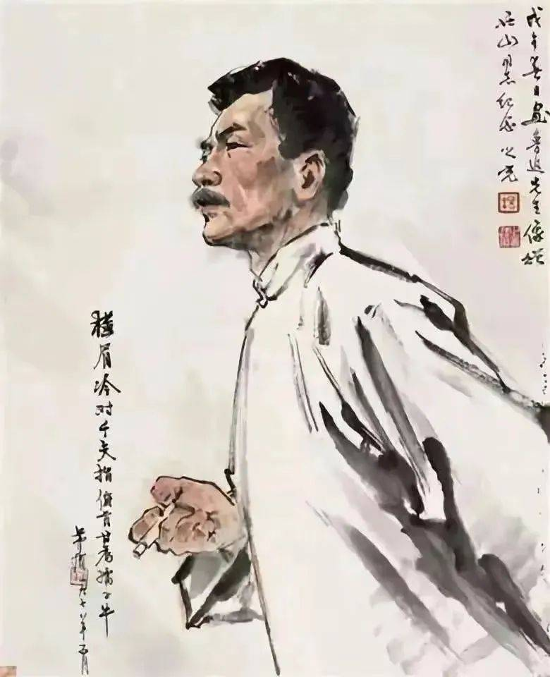
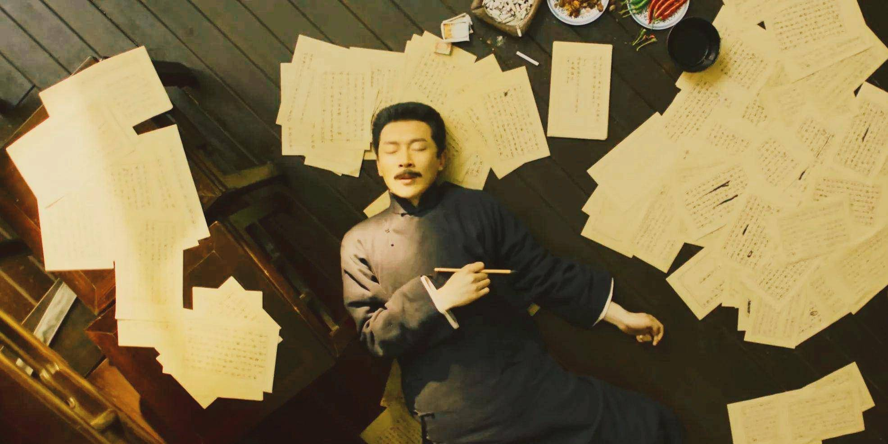

|  | 鲁迅（1881年9月25日—1936年10月19日），原名周樟寿，后改名周树人，字豫山，后改字豫才，浙江绍兴人。中国著名文学家、思想家、革命家、教育家、美术家、书法家、民主战士，新文化运动的重要参与者，中国现代文学的奠基人之一。鲁迅怀着现实关切，创造性地从中华优秀传统文化中汲取营养，创作出具有中国作风、中国气派的文学作品。 鲁迅的小说选材独特，在题材的选择上，鲁迅对古典文学中只选取“勇将策士，侠盗赃害，妖怪神仙，才子佳人，后来则有妓女嫖客，无赖奴才之流”的模式做出了改革，以“为人生”的启蒙主义式的创作目的，开创了“表现农民与知识分子”两大现代文学的主要题材。他的取材“多采自病态社会的不幸的人们中。”鲁迅在处理这些题材时又具有极其独特的眼光。在观察和表现自己的主人公时，他有着自己独特的视角，即始终关注着“病态社会”里知识分子和农民的精神“病苦”。因此，在《故乡》中，最震动人心的不是闰土后来的贫苦，而是他一声“老爷”所显示的心灵的麻木。对知识分子题材的开掘，又着眼于他们的精神创伤和危机，如《在酒楼上》老辣的眼光看到了辛亥革命中独战多数的英雄摆脱不了孤独的命运，在强大的封建传统压力下又回到原点，在颓唐中消耗着自己的生命。鲁迅的这些改革在《呐喊》和《彷徨》中就演化为“看/与被看”与“归乡”两大小说情节、结构模式。小说《示众》中所有人的动作只有“看”，关系也只有“看”与“被看”，由此形成了“看”与“被看”的二元对立，这种对立在《狂人日记》《孔乙己》《祝福》等小说中都有展现。而在“归乡”模式中鲁迅不仅讲述他人的故事也讲述自己的故事，两者互相渗透，影响，构成一个复调，如在《祝福》中，讲“我”、“祥林嫂”与“鲁镇”的三重关系，这个关系中既包含“我”与“鲁镇”的故事，又包含祥林嫂与鲁镇的故事，然而读者往往忽视前者，前者讲一个“永远漂泊者”的故事，后者讲一个封建社会吃人的故事。两个故事相串联，以祥林嫂的问题拷问“我”的灵魂，从而揭示“我”与鲁镇传统精神的内在联系。类似这种模式的小说还有《故乡》《孤独者》和《在酒楼上》。
|
| 于浩歌狂热之际中寒，于天上看见深渊，于一切眼中看见无所有，于无所希望中得救。 |  |